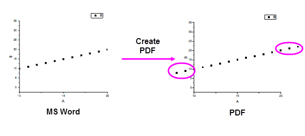

FAQ-814 Wenn ich eine PDF- aus einer MS Word-Datei erzeuge, gehen die Daten über die Achsen meines Origin-Diagramms hinaus.
Data_Outside_Graph_Axes_Using_MS_Word_PDFMaker
Letztes Update: 04.06.2021
Wenn Sie...
- die Achsenskalierung in Ihrem Origin-Diagramm verkleinern, entweder durch Ändern der Werte für Von und Bis auf der Registerkarte Skalierung des Dialogs Achsen oder über das Hilfsmittel Achsenskalierung vergrößern auf der Symbolleiste Hilfsmittel,
- dann drücken Sie Strg+J, um das Diagramm zu kopieren (Bearbeiten: Seite kopieren).
- Wählen Sie in MS Word Inhalte einfügen und fügen Sie als Bild ein (Windows Metafile oder Enhanced Metafile).
- Erstellen Sie mit Hilfe des MS Word PDFMaker Add-Ins ein PDF aus diesem Dokument.
Am Ende wird Ihnen wahrscheinlich Folgendes gezeigt:

Um dieses Problem zu beheben:
- Wählen Sie im Menü Einstellungen: Systemvariablen.
- Setzen Sie den Wert der Systemvariablen @GDIP auf 0.
- Drücken Sie jetzt Strg+J in Origin, fügen Sie Ihre WMF- oder EMF-Datei in Word ein und erstellen Sie die PDF-Datei mit Hilfe des PDFMakers erneut.
Schlüsselwörter:PDF, EMF, WMF, PDFMaker, Inhalte einfügen, Bild, Grafikexport, Daten beschneiden